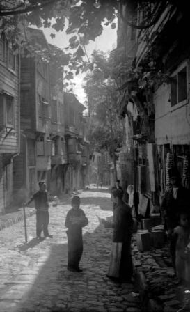

Eyüp Sultanın en büyük ehemmiyeti, mezarlıkları idi. Birçok abid ve salih kimseler, Hazret–i Hâlid’e komşu olmayı isterler ve Eyüp kabristanına defnolunmalarını vasiyet ederlerdi. Eyüp öteden beri bir mezarlık mahşeri halinde idi. Memleketin her bir ihtiyacını inceden inceye düşünmüş olan Fatih, istikbalde buranın büyük bir kabristan olacağını keşfetmiş, buraya birçok lahit inşa ettirmişti.
Lahit etrafı taşla örtülmüş (mezar) demekti. Burası, caminin vakıfları arasında bulunup, epeyce bir varidat (gelir) temin ederdi. Fakat bu mezarlara gönderilen ölülerin de orada muayyen bir zaman için yatmak hakları vardı. Bir müddet sonra, o lahitler de açılır, içindeki kemikler bir tarafa çekilerek oraya başka bir ölü yatırırlardı. Bunun için uzun uzadıya pazarlıklar yaparlardı.
Bu münasebetle yazılmış olan bir yazı elimize geçti. Garabeti itibariyle dikkate şayan bulduğumuz bu yazıyı, aynen aşağıya dercediyoruz (yayınlıyoruz).
…Önümde bekçi kılıklı bir adam belirdi. Elindeki kazmaya dayanarak, benimle şöyle bir muhavereye girişti:
— Merhaba, Efendi!
— Merhaba.
— Bir yer mi istiyorsun? Şurada bir mezar hazırladım. Pek ruhaniyetli bir yerdir. Hem de ucuz. Merak ettim. Mezarcı olduğunu anladığım bu adamı söyletmek istedim.
— Ne kadar?
— Kırk lira.
— Çok.
— Çok mu? Bu mezarda, evliyaullahtan Şeyh Sadun hazretleri yatardı. Böyle mübarek bir kabirde yatmak için kırk lira çok görülür mü? Onun yüzü suyu hürmetine bu kabirde yatanların sualleri de asan (kolay) olur.
— Nasıl sual?
— Sen, pek cahil bir kimseye benzemiyorsun, galiba ahiret işleriyle hiç alakan yok. İnsan ölüp de kabire girdikten sonra sual melekleri gelmezler mi?
— Gelirler.
— Rabbin, dinin kim diye sual etmezler mi?
— Ederler.
— İşte, ben de ondan bahsetmek istiyorum. Malum ya, bu sual meleklerine derhal cevap vermek lâzımdır. Cevap uzadıkça, ölünün azabı da çoğalır.
— Eeee… Başka kabirlerde zor cevap verilen bu sualler, senin gösterdiğin şu kabirde niçin kolaylaşıyor.
— Burada, Allah sevgili kullarından bir evliya yatmıştır da onun için. Burası, işte böyle kerametli bir yerdir. Eğer istersen sana burayı otuz liraya da verebilirim, dedi
Demek şu üst üste Eyüp mezarlığındaki hikmette bu imiş, diyerek yoluma devam ettim.
Eyüp Mezarlığı sadece bir kabristan değil, adeta bir müze halindedir. Burada, pek kıymettar eski taşlarla, bunların altında yatan birçok ehemmiyetli kimselere tesadüf edilir.
Asırlardan beri devrin en yüksek makamlarını işgal ettikten sonra, bu fani cihana ebediyen veda edenlerle, hayatta hiçbir kıymet ve ehemmiyet iktisap etmemiş olan kimselerin kabirleri, birbiriyle kucaklaşmış gibidir.
Son zamanlarda, Osmanlı saltanatı hanedanından Sultan Mehmet Reşat da burada defnolunmayı arzu etmiş, sahilde kendisine bir türbe ile onun yanında da bir mektep inşa ettirmişti.
Bu padişahın başkâtibi Ali Fuat Bey merhum, bir gün bana şöyle bir şey hikâye etti:
Sultan Reşad, bir Cuma günü selamlıktan sonra araba ile Kâğıthane’ye gitmiş ve sonra oradan, saltanat kayığı ile Dolmabahçe Sarayı’na avdet etmek istemiş. Lâkin tam Eyüp’teki türbesinin önüne gelince, şöylece gözü kendisine türbe olmak üzere inşa edilmiş olan o binaya ilişmiş,
Herhalde günün birinde orada yatacağını aklına getirmiş olacak ki, rengi adeta kül kesilmiş.
Muhtelif devir ve mesleklerle şöhret almış olan birçok kimselerin Eyüp’te kabirleri, aile kabirleri ve türbeleri vardır. Bunların da belli başlı olanları, şunlardır:
1. Eski Kaptan paşalardan, Çengeloğlu Tahir Paşa (kabir),
2. Adliye Nazırlarından Abdurrahman Paşa (türbe ve sebil),
3. İkinci Sultan Mahmud’u, Üçüncü Sultan Selim’in katilleri tarafından öldürülmekten kurtaran Cevri Usta’nın türbesi iskele civarındadır. Yanında, bir de mescidi vardır. Bu mescit evvelce ahşaptan iken, Sultan Hamit devrinin meşhur Bahriye Nazırlarından Bozcaadalı Hasan Paşa tarafından yıktırılmış kâgir olarak yeniden yaptırılmıştır.
4. Şeyhülislam Şerifzade (kabir),
5. Bahriye Nazırlarından Bozcaadalı Hasan Paşa (türbe),
6. Posta ve Telgraf Nazırlarından İzzet Efendi (türbe),
7. Mehmet Ali Paşa (türbe),
8. Meşhur Seraskerlerden Hüsrev Paşa (türbe),
9. Sultan Mahmud’un hemşirelerinden Adile Sultan (türbe),
10. Üçüncü Sultan Selimin validesi Mihrişah Kadın Efendi (türbe, sebil ve çeşmesi de vardır.),
11. Sultan Mahmud’un musahiplerinden Abdi Efendi (kabir),
12. Eski ilmiye ricalinden Küçük Emir Efendi (türbe),
13. Eski mülkiye ricalinden Emir Efendi (türbe),
14. Pertev Paşa (türbe),
15. Şeyhülislam Uryanîzade Esat Efendi (türbe),
16. Eski, Şeyhülislamlardan Ebussuud Efendi (kabir),
17. Eski vezirlerden Ayas Paşa,
18. Meşhur Deli Fuat Paşa’nın pederi, İncirköylü Müşir Hasan Paşa (kabir),
19. Hançerli Sultan (kabir),
20. İkinci Sultan Bayezid’in vezirlerinden Mustafa Paşa (kabir),
21. Üçüncü Sultan Selim’in Kızlarağası Hacı Beşir Ağa (türbe),
22. 1313 (Türk— Yunan) harbinde Türk ordularını kumanda eden Müşir Ethem Paşa,
23. Sultan Hamid’in meşhur Sadrazamı, Sait Paşa (kabir),
Bu zat Hazret–i Hâlid’in türbesine yakın bir yerde defnolunmasını vasiyet etmiş. Aranmış taranmış, münasip bir yer bulunamamış. Türbeye yakın bir yerde, iki servinin arasına defnedilmiş. Hatta üzerine taş dikilecek bir yer olmadığı için, kitabesi, oradaki servilerden birine iliştirilmiş. Sonra oraya bir yıldırımın düşmesi üzerine, kitabe de parçalanıp gitmiş. Sultan Hamit tarafından bizzat böyle rivayet edilmiştir.
24. Şeyhül— Kurrâ Hafız Recep Efendi (kabir),
25. Çifte Gelinler (türbe), güya bu iki gelin, Kırım Hanlarından birinin kızları imiş. İkisi de veremden vefat etmişler. Buraya defnedilmişler.
26. Meşhur Şair Tevfik Fikret (kabir),
27. Fetva Eminlerinden, meşhur Nuri Efendi (kabir),
28. İkinci Sultan Mahmud’un Berberbaşısı olup o devrin siyasetine karışmış olan Hacı Mustafa Ağa (kabir),
29. Eski sadrazamlardan Ferhat Paşa (türbe),
30. Koca Ragıp Paşa devrinin meşhur kadın şairi Fitnat (türbe),
31. 2’nci Sultan Mahmud’un meşhur muhasibi Sait Efendi (kabir),
32. Meşhur, cihan pehlivanı Kara Ahmed’in mezarı,
33. Zekai Dede ve oğlu Ahmet Bey’in (kabirleri),
34. Kadıaskerlerden Balî Efendi’nin türbesi,
35. Fatih’in yazı hocası Veliüddin Efendi’nin kabri,
36. (Tecvit müellifi) Aceleci Ahmet Efendi’nin türbesi,
37. Zal Mahmut Paşa türbesi,
38. Nakkaş Hasan Paşa türbesi,
39. Hazret–i Hâlid ile beraber İstanbul fethine gelen Ashab–ı kiramdan Ebu Derda hazretlerinin kabri,
40. Fatih ordusu ile İstanbul’un fethine gelen Evliyaullahtan Eyvanos Dede’nin kabri,
41. Fatih’in Arpacıbaşısı Hayreddin Ağa’nın türbesi (yanında, tarihi ehemmiyeti olan mescidi vardır.),
42. Arakyacı Cafer Çelebi’nin türbesi,
43. Sultan Hamid devrinin zenginlerinden ve vapur sahiplerinden Tantâvizade Hâlid Bey’in kabri,
44. Meşhur din ulemasından İbrahim Halebî’nin kabri,
45. Meşhur ulemadan İbn–i Kemal’in kabri,
46. Son devrin meşhur şairlerinden Mehmet Akif’in kabri,
47. Dördüncü Sultan Muradın muhasiplerinden olup İncili çavuş namiyle şöhret almış olan zatın kabri,
48. Önüne geleni hicvettiğinden dolayı, Topkapı Sarayı’nın odunluğunda saray baltacılarına boğdurulan meşhur şair Baki’nin kabri,
49. Itri’nin kabri (Bu kabirde yatan zat ile meşhur musiki üstatlarından Itri’yi birbirine karıştırmamak lâzım gelir. Çünkü Itrinin kabri, Edirnekapı haricindedir. Ve bu da, son zamanlarda keşfedilmiştir.)
